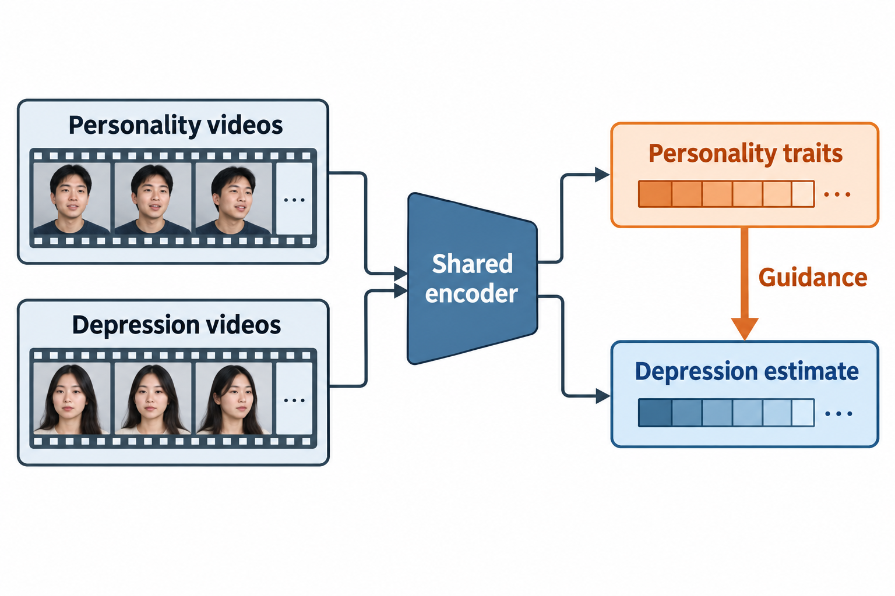
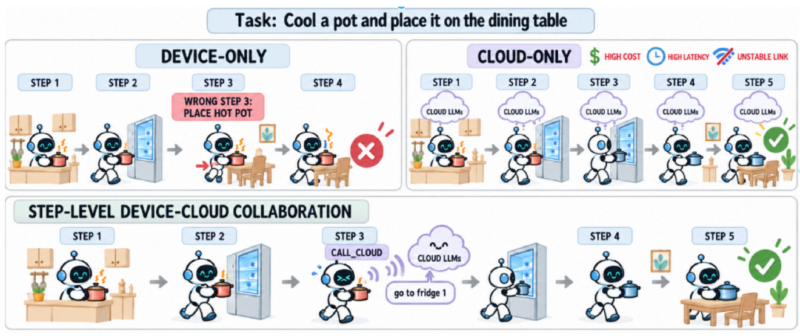
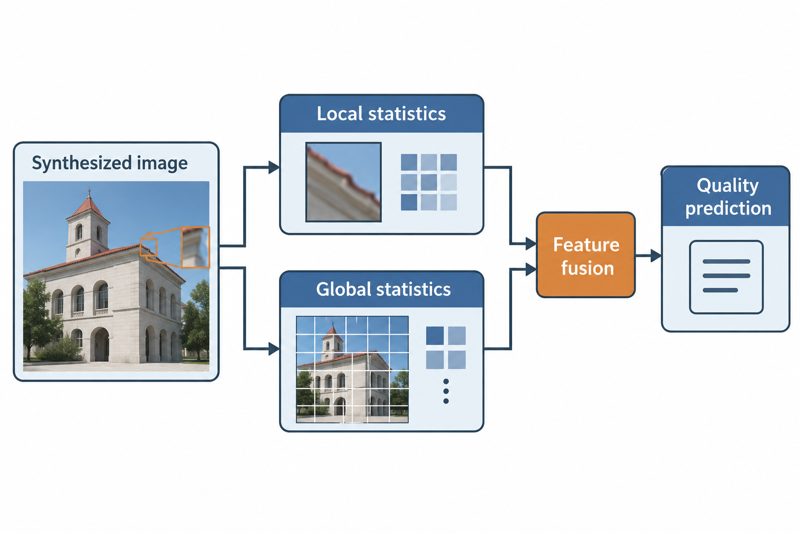

About Me 关于我
你好，我是方喆炜，目前在杭州电子科技大学攻读计算机科学与技术硕士学位。
获国家奖学金、浙江省优秀毕业生和优秀毕业论文。
Research Interests 研究兴趣
主要关注大模型后训练、统一多模态、Agentic RL 与多模态理解与生成。
其他研究兴趣包括模式识别、图像质量评价与多模态情感识别。
Experience 实习经历
阿里巴巴集团（淘宝）· Meta 团队
算法实习生 · 2025–2026
- 深度参与 MNN-Pocket 后训练全流程，覆盖数据、SFT、RL、MOPD、量化、评测与端侧交付。
- 搭建 SFT Loop Engine，通过失败样本自动归因、合成补数与迭代训练，使 11 项任务均值提升 7.46 个百分点。
- 参与多教师蒸馏与 QAT，将 302.8M 模型压缩至 166MB；MNN 开源模型累计下载 6K+。
- 主导 Imp-o 1B–3B 训练与 Sana-Turbo 端侧加速，并推进端云协同 Agentic RL 实验。
Open Source 开源项目
核心参与者
端侧小模型 · 后训练与部署
作为核心参与者，参与数据构建、SFT、RL、多教师蒸馏、量化与评测，推动模型在 MNN 端侧落地。
- 系列最近 30 天下载量
- —
- 系列累计下载量
- —
统计 taobao-mnn 下 MNN-Pocket 系列各模型仓库的下载次数合计。
正在获取系列下载统计…
taobao-mnn · Hugging Face
- 最近 30 天下载量
- —
- 累计下载量
- —
正在获取下载统计…
Publications 论文与研究
IEEE TPAMI · 已录用独立第一作者
PerDepNet: Personality-guided Cross-domain Multitask Learning Network for Automated Video Depression Detection
Zhewei Fang, Kaiyin Lian, Shiqing Zhang, Zhou Yu, Jun Yu, Siwei Ma, Qi Tian
引入人格域信息，并设计跨领域多任务学习与视听融合模块，增强抑郁相关情绪线索建模。

核心思想示意
PREPRINT · 2026共同第一作者
Sibyl: An Efficient Small-large Model Collaboration Framework for Long-horizon Tasks
Zhewei Fang, Yuxin Zhang, Zhenwei Shao, Mengze Li, Zheng Lin, Long Chen, Zhou Yu, Zhe Chen, Zhiwen Chen, Zhaode Wang, Chengfei Lv
让端侧小模型学会何时咨询云端大模型，并内化其指导。通过自演化强化学习、咨询冷启动与咨询感知强化学习，在提升长程任务成功率的同时减少云端调用。

论文协作示意 · Figure 1
IEEE TIM · 已发表第一作者
Blind 3D-synthesized Image Quality Measurement by Analysis of Local and Global Statistical Properties
Zhewei Fang, Yueli Cui, Mei Yu, Gangyi Jiang, Kaiyin Lian, Yulu Wen, Jiayao Xu
提取局部与全局统计特征表征虚拟视点合成失真，完成无参考图像质量预测。

核心思想示意
Honors & Awards 荣誉奖项
- 国家奖学金（2023）
- 华为 ICT 大赛全球二等奖 / 全国一等奖（2023）
- CCF YOCSEF 学术秀全国二等奖（2024）
- 中国“互联网+”大学生创新创业大赛国家银奖（2024）